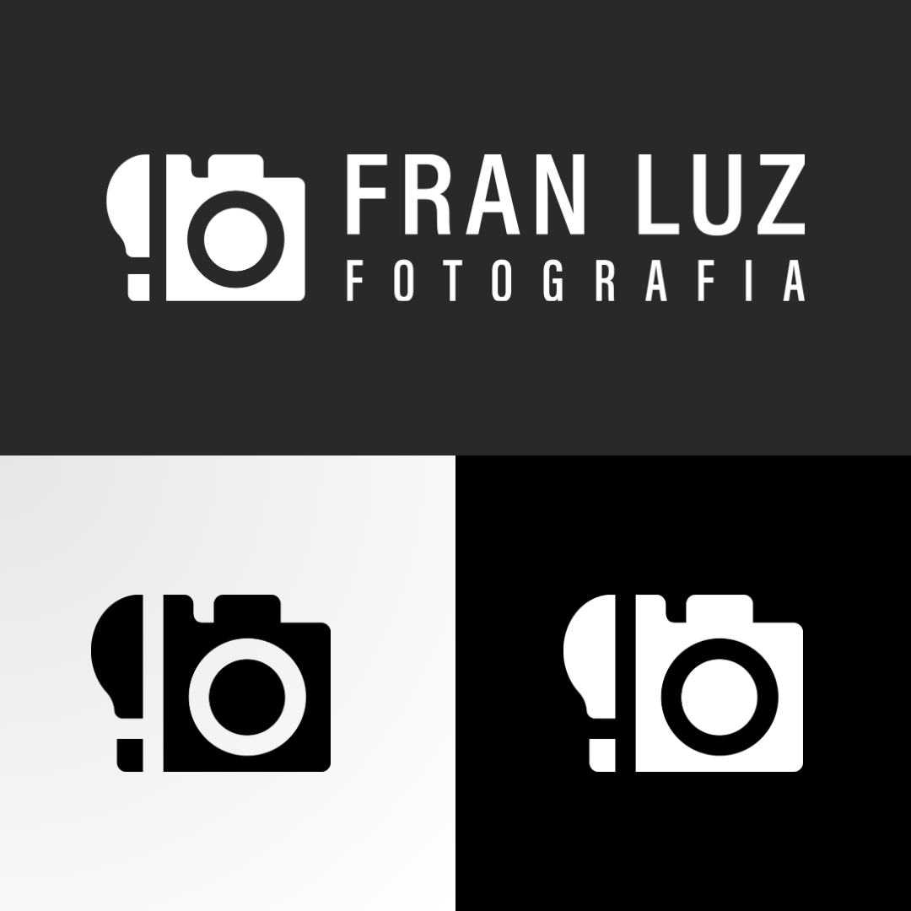
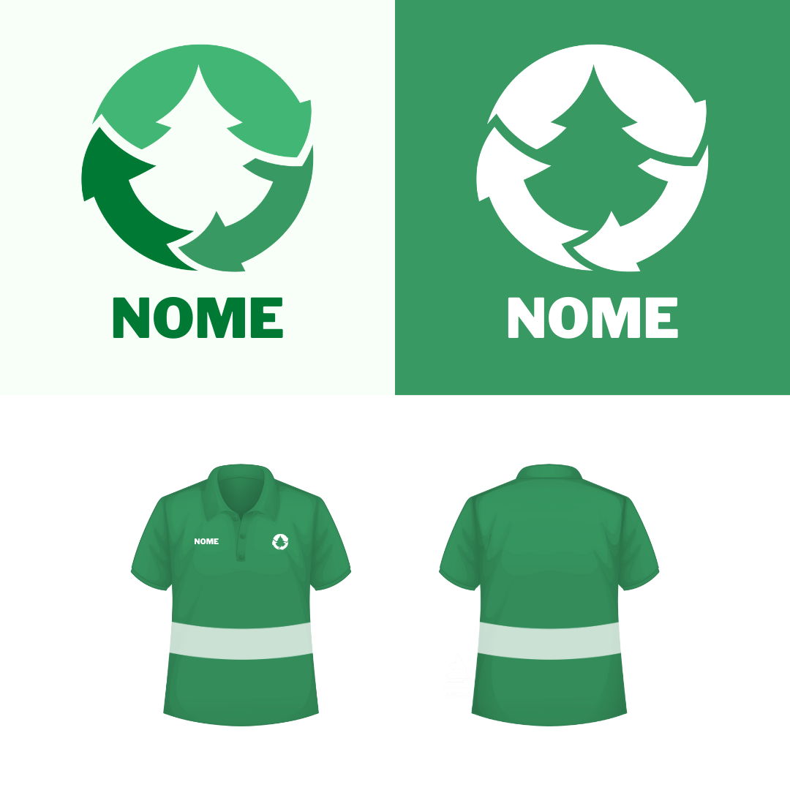
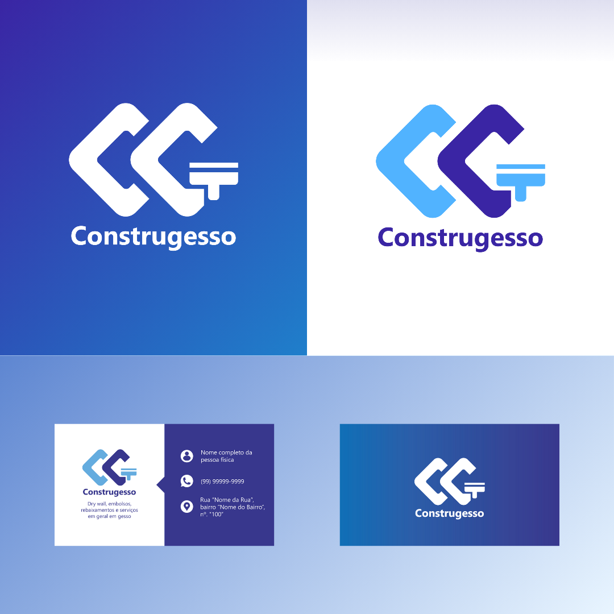

Meus trabalhos gráficos
Os seguintes trabalhos foram desenvolvidos para projetos reais, com clientes reais, e para um concurso de design. São identidades visuais que seguiram um briefing bem definido, desenvolvidos após inúmeros rascunhos e protótipos.
Fran Luz Fotografia
A identidade visual criada para a "Fran Luz Fotografia" foi desenvolvida através do software Illustrator, da adobe. Foi entregue em alta resolução e com um nível de lapidação muito alto. Chegamos ao resultado depois de inúmeras tentativas de conectar a ideia de "luz" (totalmente relacionado à fotografia) ao o nome da fotógrafa.
Projeto Identidade Visual
Esse projeto foi desenvolvido para um concurso de design para uma associação de catadores de material reciclável. O projeto consistia em utilizar o pinheiro, um grande símbolo do trabalho em equipe, com a temática da reciclagem. O desafio me rendeu alguns cursos extracurriculares bem interessantes em softwares de edição.
Construgesso
A identidade visual da Construgesso foi criada com o intuito de transpor o tipo de serviço realizado pelo MEI em questão. Desenvolvi a logo pensando em losangos (forma muito presente em trabalhos de gesso) com um dos instrumentos mais utilizados por quem realiza o trabalho, uma espátula.
